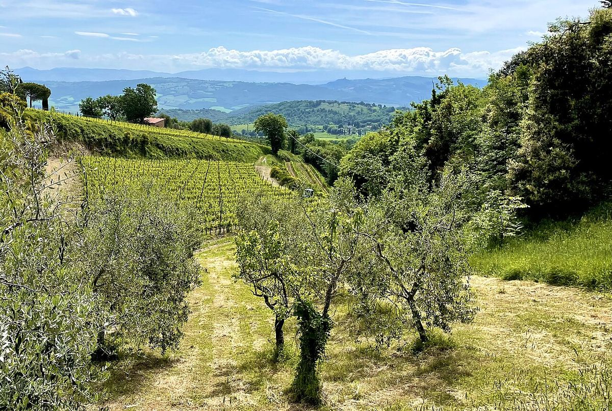

ROSSO
Il Brunello di Montalcino è un rosso 100% Sangiovese prodotto nel comune di Montalcino, in provincia di Siena. È noto per il lungo affinamento obbligatorio e per la sua capacità di invecchiamento.

A Montalcino il nome Brunello indicava localmente il Sangiovese. Nella seconda metà dell'Ottocento la famiglia Biondi-Santi, e in particolare Ferruccio Biondi-Santi, selezionò questo vitigno nella tenuta Il Greppo e produsse un rosso di Sangiovese in purezza destinato a un lungo invecchiamento, in un'epoca in cui la zona era più nota per il Moscadello, un bianco dolce. Per buona parte del Novecento il Brunello rimase una piccola produzione, nelle mani di poche aziende. La denominazione ottenne la DOC nel 1966 e nel 1980 fu tra le prime DOCG d'Italia. Il consorzio dei produttori fu costituito nel 1967. Dagli anni Settanta e Ottanta l'arrivo di nuove cantine ampliò molto la superficie vitata e la notorietà internazionale del vino.
La zona coincide con il territorio comunale di Montalcino, una collina con il paese in cima, delimitata dalle valli dei fiumi Orcia, Asso e Ombrone. A sud-est il massiccio del Monte Amiata offre protezione da temporali e grandinate, mentre la relativa vicinanza del Tirreno porta un'influenza mediterranea. Il clima è più caldo e secco che nel Chianti Classico, pur variando tra i versanti settentrionali, più freschi, e quelli meridionali, più caldi e soleggiati.
I suoli sono molto diversi: nelle zone alte abbondano il galestro e le marne calcaree, mentre a quote più basse compaiono suoli più argillosi e sabbiosi, con depositi alluvionali nelle valli. Questa varietà, insieme ad altitudine ed esposizione, spiega le differenze di stile tra i diversi versanti.
Il Brunello si produce esclusivamente con Sangiovese e deve affinare almeno due anni in legno. Non può essere messo in commercio prima del 1° gennaio del quinto anno successivo alla vendemmia, o del sesto anno per la Riserva. Per i vini di Sangiovese da bere più giovani esiste la DOC Rosso di Montalcino, e la zona conta anche le DOC Sant'Antimo e Moscadello di Montalcino.
Il Brunello presenta di solito colore rubino o granato, profumi di ciliegia matura, prugna, erbe aromatiche, cuoio e spezie, e un sorso con acidità marcata, tannini decisi e struttura per evolvere a lungo in bottiglia. Con l'invecchiamento emergono note di sottobosco, tabacco e spezie dolci.